(Towards) Data Platforms
Big Data and Cloud Platforms (Module II)
DISI — University of Bologna
m.francia@unibo.it
Roadmap
Today’s question:
Why did databases evolve into data platforms?
We will move through the main architectural pressures:
- Operational data: databases and OLTP
- Analytical data: DWHs and OLAP
- Heterogeneous data: NoSQL and data lakes
- Unified analytics: lakehouses
- Managed complexity: governance, metadata, fabric, mesh, and DataOps
How did we get here?
Data-Driven Innovation
- Use of data and analytics to foster new products, processes, and markets
- Drive discovery and execution of innovation, achieving new services with a business value
Analytics
- A catch-all term for different business intelligence (BI) and application-related initiatives
- E.g., analyzing information from a particular domain
- E.g., applying BI capabilities to a specific content area (e.g., sales, service, supply chain)
Advanced Analytics
- (Semi-)Autonomous examination of data to discover deeper insights, make predictions, or generate recommendations (e.g., through data/text mining and machine learning)
Augmented Analytics
- Use of technologies such as machine learning and AI to assist with data preparation, insight generation, and insight explanation to augment how people explore and analyze data
How did we get here?
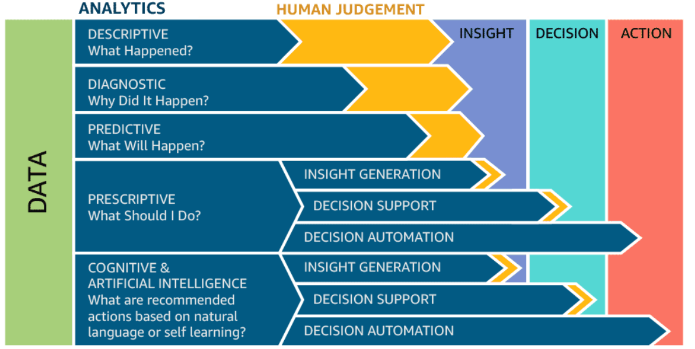
From descriptive to prescriptive analytics
Data platform: why storage is not enough
Companies are collecting tons of data to enable advanced analytics.
- Raw data is difficult to obtain, interpret, and maintain
- Data is more and more heterogeneous
- There is a need for curating data to make it consumable
Where are we collecting/processing data?
- Getting value from data is not (only) a matter of storage
- Need integrated and multilevel analytical skills and techniques
Data platform: value needs context
“It is a capital mistake to theorize before one has data. Insensibly, one begins to twist the facts to suit theories, instead of theories to suit facts.”
- Sherlock Holmes
Getting value from data is not (only) a matter of storage. Examples?
 Case study: photo gallery
Case study: photo gallery
Photo Gallery
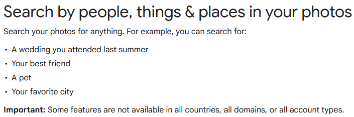
Introduction
Managing large photo collections is increasingly challenging.
Common issues include:
- Difficulty searching and organizing images
- Loss of contextual information about each photo
- Time-consuming manual tagging and categorization
Challenges in Photo Gallery Management
- Thousands of images accumulate over time
- Manual metadata entry is slow and error-prone
- Finding images based on content is difficult
- Metadata inconsistency leads to poor searchability
Why Metadata Matters
Metadata provides critical information about images:
- File-level info: name, size, creation date
- Camera info: make, model, GPS, exposure
- Content info: objects, people, and scenes
Well-structured metadata enables:
- Fast search and filtering
- Smarter organization and categorization
- Enhanced user experience
Using YOLO for Metadata Extraction
YOLO (You Only Look Once) is an object detection system.
- Automatically detects objects in images
- Provides labels, bounding boxes, and confidence scores
- Converts visual content into structured metadata
How YOLO Sees the Image
- Input image is divided into a grid (e.g., 13x13)
- Each grid cell is responsible for objects whose center falls in the cell
- Each cell predicts bounding boxes + confidence + class probabilities
How YOLO Works in the Gallery
- Scan images in the collection
- Detect objects (e.g., person, dog, car)
- Record bounding boxes and confidence
- Generate per-image JSON metadata
Example JSON snippet:
Data Catalog for Accessible Metadata
A data catalog store metadata and makes them searchable.
Using MongoDB as a (very simple) data catalog, we can stores per-image JSON metadata efficiently:
- Flexible schema for diverse metadata
- Enables querying by labels, confidence, dates, or GPS
- Scalable for large galleries
- Integrates easily with web apps or dashboards
Making Metadata Accessible
Sample queries:
- Find all images containing “dog”:
- Find images taken after a certain date:
Lesson learned
This simple case study intersects several topics:
- Data governance, profiling, and data catalog (what we will study)
- Off-the-shelf ANN for data profiling (Machine Learning and Data Mining course)
- NoSQL solutions to manage semi-structured and heterogeneous metadata
End of the case study
From databases to data platforms
Data platform: what is a database?
Database (Özsu 2018)
“A database is a structured and persistent collection of information about some aspect of the real world, organized and stored in a way that facilitates efficient retrieval and modification. The structure of a database is determined by an abstract data model. Primarily, it is this structure that differentiates a database from a data file.”
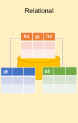
Data platform: operational data
At the beginning, computer science was seen as a subsidiary discipline that makes information management faster and cheaper
- … but did not create (new) profits in itself
The main goal of databases in companies has been that of storing operational data (Codd 1970)
- Data generated by operations carried out within business processes
Online transaction processing (OLTP) is a type of database system used in transaction-oriented applications, such as many operational systems.
- “Online” refers to the fact that such systems are expected to respond to user requests and process them in real-time.
- Large number of database transactions (writing and reading data) in real-time
Data platform: decision support
An exponential increase in operational data has made computers the only tools suitable for decision-making performed by business users
- The massive use of techniques for analyzing enterprise data made information systems a key factor to achieve business goals
The role of computer science in companies has radically changed since the early 70’s.
- ICT systems turned from simple tools to improve process efficiency…
- … into key factors of company organizations capable of deeply impacting on the structure of business processes
Problem: how do we manage data heterogeneity?
Data platform: schemaless data
Schemaless databases
There is no predefined schema that the data must conform to before being added to the database. As a result, you don’t need to know the structure of your data, enabling you to store all your data more easily and quickly.
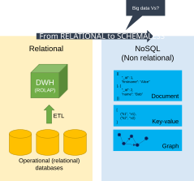
Problem: how do we transform data into actionable business insights?
Data platform: from big data to small data
Big Data must be transformed into Small Data so that it can be exploited for decision-making purposes
- Small data is data that is small enough for human comprehension.
- It is data in a volume and format that makes it accessible, informative and actionable.
Big vs small data
Data platform: analytical scenario
Scenario:
- Large company, with several branches
- Managers wish to quantify and evaluate the contribution given from each branch to the global profit
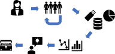
Typical scenario
Data platform: data warehouse
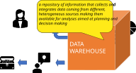
Data Warehouse
Data platform: platform generations
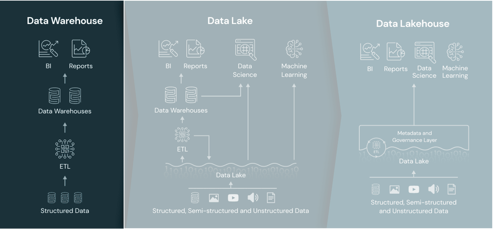
Evolving generations of data platforms
Data platform: DWH definition
Data Warehouse (DWH) (Golfarelli and Rizzi 2009)
“A collection of data that supports decision-making processes. It provides the following features: subject-oriented, integrated and consistent, evolution over time and it is not volatile.”
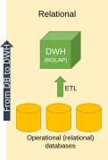
Data platform: DWH definition
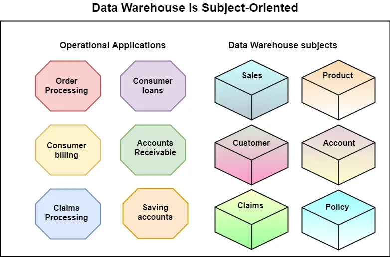
Organize data around core business concepts (e.g., sales and customers) rather than around individual applications or processes.
Data platform: DWH definition
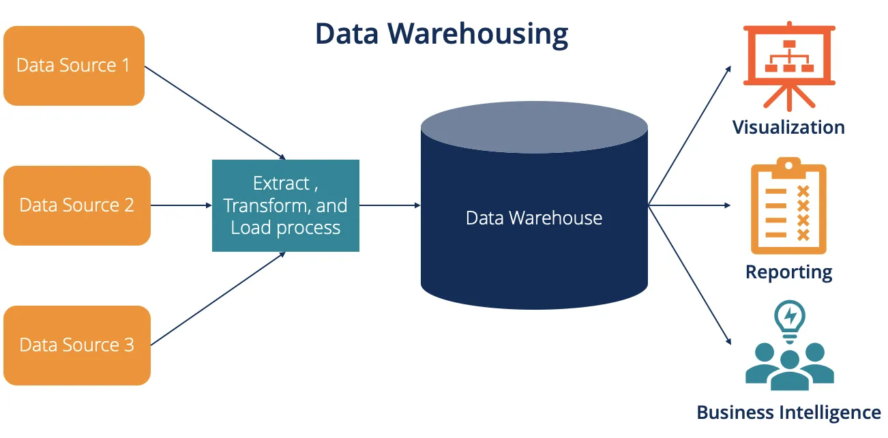
Integration and consistency of data.
Data platform: multidimensional analysis
The multidimensional model is the key for representing and querying information in a DW
- (Business) Facts of interest are represented in (hyper) cubes where:
- Each cell stores numerical measures that quantify the fact from different points of view;
- Each axis is a dimension for analyzing measure values;
- Each dimension can be the root of a hierarchy of attributes used to aggregated measure values
Online analytical processing (OLAP) to answer multi-dimensional analytical queries.
- Interactive sessions of analysis reading large amounts of data.
Data platform: OLAP roll up
Querying the cube with OLAP operators: roll up
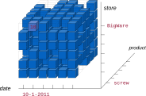
Data platform: OLAP drill down
Querying the cube with OLAP operators: drill down
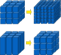
Data platform: dimensional fact model
The Dimensional Fact Model (Golfarelli et al. 1998b) is a graphical conceptual model for DWH design, devised to:
- create an environment in which user queries may be formulated intuitively
- make communication possible between designers and end users with the goal of formalizing requirement specifications
- build a stable platform for logical design (independently of the target logical model)
- provide clear and expressive design documentation
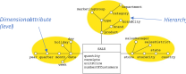
DFM
Data platform: DFM to ER
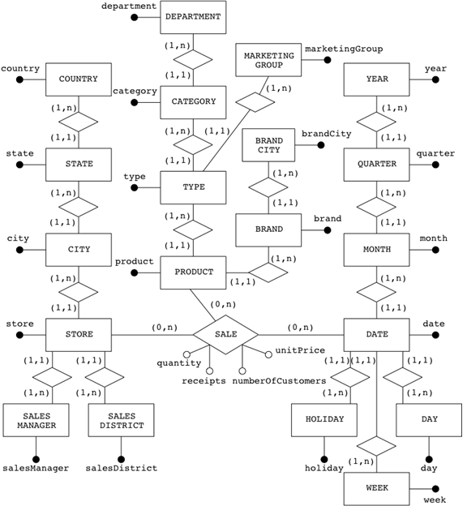
OLTP vs OLAP?
Data platform: OLTP vs OLAP
| Characteristic | OLTP | OLAP |
|---|---|---|
| Type of workload | Constant transactions (reads/writes) | Periodic large writes, interactive large reads |
| Examples | Accounting database, online retail transactions | Reporting, decision support |
| Type | Operational data | Business data |
| Data retention | Short-term (2-6 months) | Long-term (2-5 years) |
| Storage | Gigabytes (GB) | Terabytes (TB) / Petabytes (PB) |
| Users | Many | Few |
Data platform: platform generations
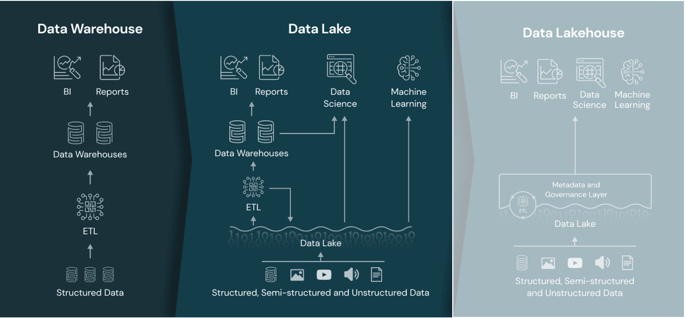
Evolving generations of data platforms
Data platform: data lake definition
Data lake (Couto et al. 2019)
“A DL is a central repository system for storage, processing, and analysis of raw data, in which the data is kept in its original format and is processed to be queried only when needed. It can store a varied amount of formats in big data ecosystems, from unstructured, semi-structured, to structured data sources.”
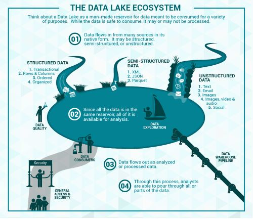
Data platform: data lake architecture
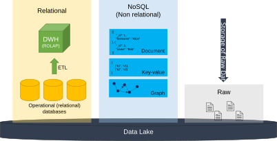
Data lake
Data platform: data lake limitations
The data lake started with the Apache Hadoop movement, using the Hadoop File System (HDFS) for cheap storage
- Schema-on-read architecture
- Agility of storing any data at low cost
- Eludes the problems of quality and governance
Downsides of data lakes
- Security
- All the data is stored and managed as files
- No fine-grained access control on the contents of files, but only coarse-grained access governing who can access what files or directories
- Quality
- Hard to prevent data corruption and manage schema changes
- Challenging to ensure atomic operations when writing a group of files
- No roll-back mechanism
- Query performance
- Formats are not optimized for fast access
It is often said that the lake easily turns into a swamp
DWH vs Data Lake?
Data platform: DWH vs Data Lake
| Data warehouse | Data lake | |
|---|---|---|
| Data model | Relational | Non-relational and relational |
| Schema | Designed prior to implementation (schema-on-write) |
Written at the time of analysis (schema-on-read) |
| Price/performance | Faster queries, higher cost storage | Slower queries, lower-cost storage |
| Data quality | Highly curated data, the central version of the truth | Any (raw) data |
| Users | Business analysts | Data scientists, developers, and business analysts |
| Analytics | Batch reporting, BI, and visualizations | Machine learning, predictive analytics, data discovery, and profiling. |
Data platform: two-tier architecture
A two-tier data lake + DWH architecture is dominant in the industry
- HDFS replaced by cloud data lakes (e.g., S3, ADLS, GCS)
- Data lake directly accessible to a wide range of analytics engines
- A subset of data is “ETL-ed” to a DWH for important decision support and BI apps
While the data lake and DWH architecture is ostensibly cheap, a two-tier architecture is highly complex for users
- Problems?
Data platform: two-tier limitations
(Some) main problems:
- Data is first ELTed into lakes, and then again ETLed into DWHs
- Reliability. Keeping the data lake and DWH consistent is difficult and costly
- Data staleness. The data in the DWH is stale compared to that of the data lake, with new data frequently taking days to load
- Limited support for advanced analytics.
- Businesses want to ask predictive questions using their DWHs
- Machine learning systems do not work well directly on top of DWHs
- Process large datasets using complex non-SQL code
Data platform: towards lakehouses
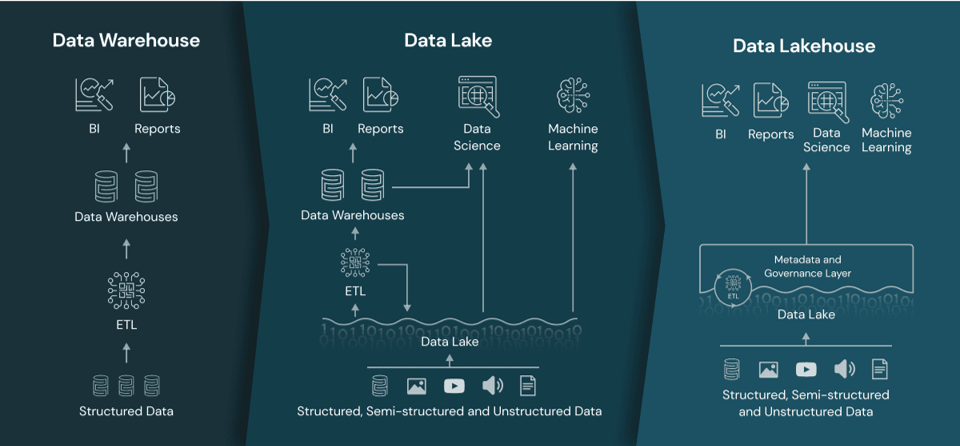
Evolving generations of data platforms
Data lakehouse (Armbrust et al. 2021)
Data lakehouse
Data management architecture that combines the flexibility, cost-efficiency, and scale of data lakes with the data management and ACID transactions of DWHs, enabling business intelligence (BI) and machine learning (ML) on all data
Key technologies used to implement Data Lakehouses
- Databricks’ Delta Tables
- Apache Hudi
- Apache Iceberg
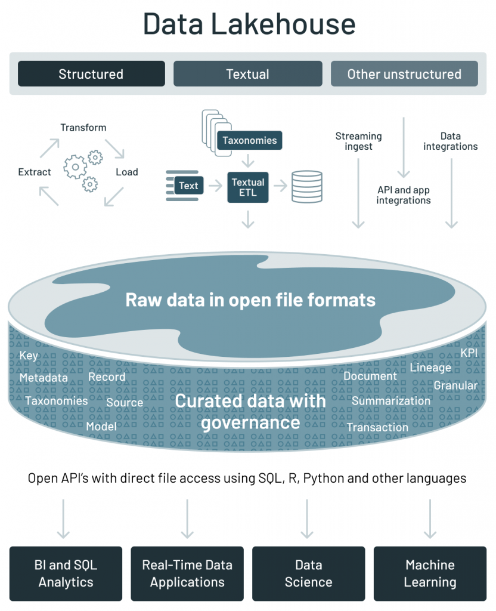
https://databricks.com/blog/2021/05/19/evolution-to-the-data-lakehouse.html
Data lakehouse: main features
Main features:
- Store data in a low-cost object store using a standard file format such as Apache Parquet
- Implement a transactional metadata layer on top of the object store that defines which objects are part of a table version
- Implement management features within the metadata layer
Challenges:
- The metadata layer is insufficient to achieve good SQL performance
- DWHs use several techniques to get state-of-the-art performance
- Storing hot data on fast devices such as SSDs, maintaining statistics, building efficient indexes, etc.
- In a Lakehouse it is not possible to change the format, but it is possible to implement other optimizations that leave the data files unchanged
Data lakehouse: comparison
| Data Warehouse | Data Lake | Data Lakehouse | |
|---|---|---|---|
| Data format | Proprietary format | Open format | Open format |
| Types of data | Structured | * | * |
| Data access | SQL-only, no file access | File access | APIs for SQL, R, Python, etc. |
| Reliability | High quality, ACID transactions | Low quality, “data swamp” | High quality, ACID transactions |
| Governance & security | Fine-grained (row/column-level) | Weak governance; file-level security | Fine-grained (row/column-level) |
| Performance | High | Low | High |
| Scalability | Expensive at scale | Scales cheaply for any data type | Scales cheaply for any data type |
| Use case | BI | Machine learning | Unified for BI and ML |
Data platform: data hub
Data lakes (or lakehouses) have increasingly taken the role of data hubs
- Eliminate up-front costs of ingestion and ETL since data are stored in the original format
- Once in DL, data are available for analysis by everyone in the organization
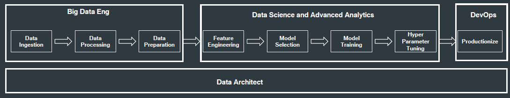
(Big) data pipeline
Blurring of the architectural borderlines: Drawing a sharp line between storage/computation/analysis is hard
- DL is often replaced by “data platform” or “data ecosystem”
- Encompass systems supporting data-intensive storage, computation, analysis
Data platform: final definition
Data platform
A unified infrastructure that facilitates the ingestion, storage, management, and exploitation of large volumes of heterogeneous data. It provides a collection of independent and well-integrated services meeting end-to-end data needs.
- Unified: is conceptually a data backbone
- Independent: a service is not coupled with any other
- Well-integrated: services have interfaces that enable easy and frictionless composition
- End-to-end: services cover the entire data life cycle
Rationale: relieve users from the complexity of administration and provision
- Not only technological skills, but also privacy, access control, etc.
- Users should only focus on functional aspects
Example of data platform: Hadoop-based
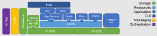
Hadoop-based data platform
On-premises manual provisioning
Technical challenges
- Installation: how do I set up a new machine?
- Networking: how do I cable dozens of machines?
- Management: how do I replace a broken disk?
- Upgrade: how do I extend the cluster with new services/machines?
- (energy and cooling, software licenses, insurance…)
Technological challenges
- How do we configure a distributed environment?
- How do we set up/integrate/control independent services?
- How do we orchestrate data flows?
Business challenges
- Can we afford to spend resources on tasks that are not mission-oriented?
- No free lunch, each choice has a cost/benefit
- How much time does it take to master a technology?
- How many people do I need?
Data platform: related job positions
(Big) data pipeline
Data engineer
- Orchestrate the successful implementation of cloud technologies within the data infrastructure of their business
- Have a strong understanding of the impact of different database types and their implementation
- Responsible for purchasing decisions for cloud services and approval of data architectures
Data scientist
- Analyze and interpret complex digital data
- Work with new technologies (e.g., machine learning) to deepen the business’s understanding and gain new insights
Summing up
Storage should be flexible enough to support heterogeneous data models and raw data.
- From operational databases to DWHs (why?)
- From relational data models to NoSQL (why?)
- Data lake to (directly) ingest raw data
Storage, per se, is insufficient to get value from the data (examples?)
- We also need data processing and fruition
- Data lakes are blurring into data platforms
Data platforms support end-to-end data needs (which ones?)
- Building data platforms is hard (why?)
- Managing data platforms is hard; exploit metadata to ease this task
- Data lineage, compression, profiling, resolution, etc.
Open question: How do we deploy working data platforms?
How do I know if I am prepared for the exam?
Open a random slide, are you able to explain its content and connect it to the rest of the topics?
References
BDCP Module II - M. Francia - A.Y. 2026/27